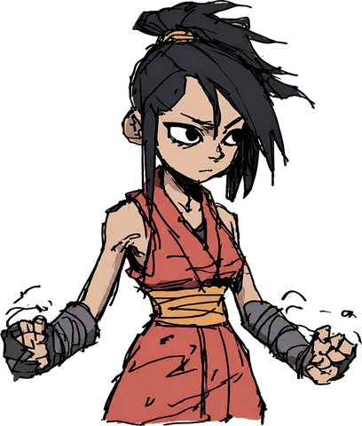
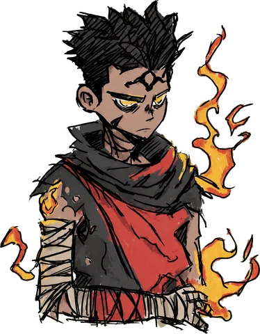
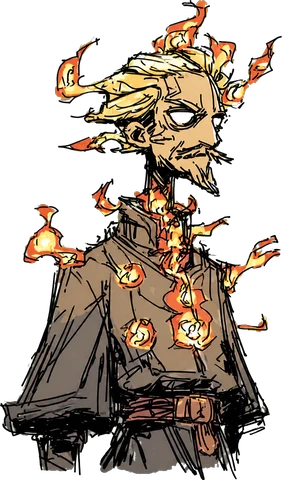
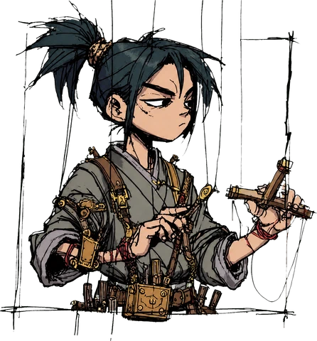
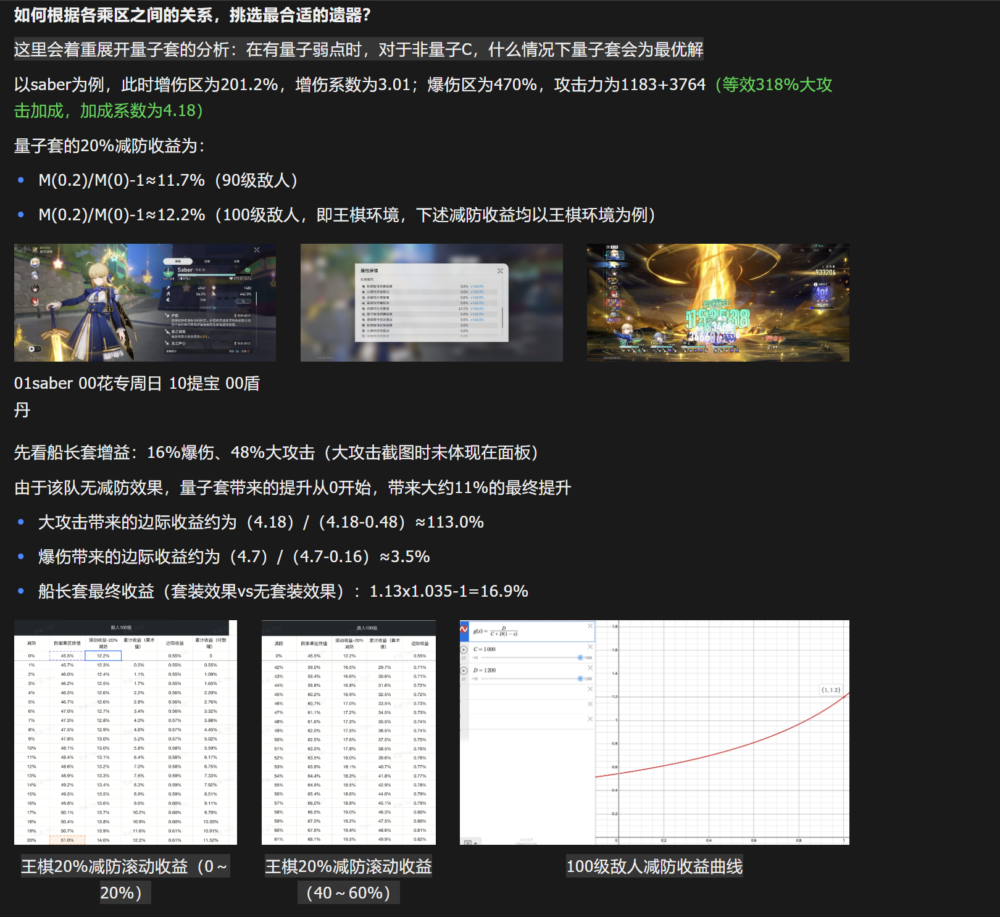
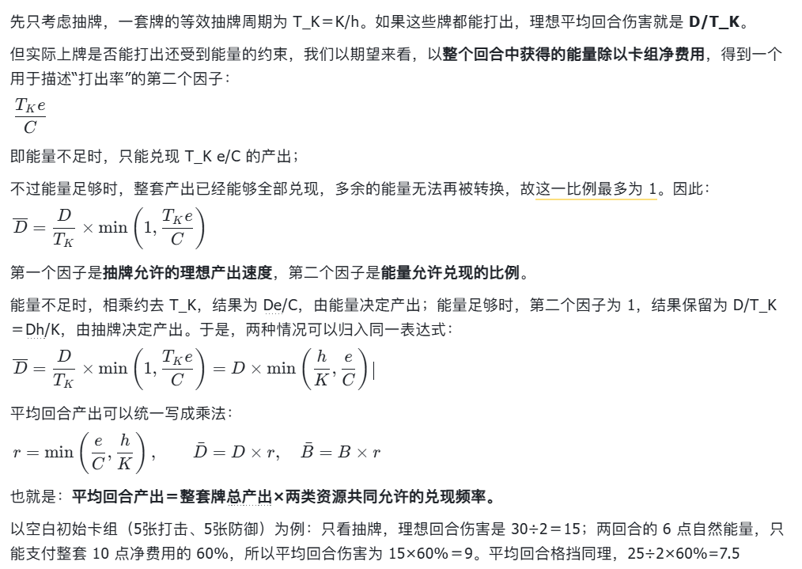

01 OPEN-SOURCE TOOL / AGENT ORCHESTRATION
Controller图式智能体编排
 图式智能体编排工具实际运行界面 ↗
图式智能体编排工具实际运行界面 ↗
项目介绍
ABOUT THE PROJECT
把多智能体协作，变成可追踪的工作图。
将任务依赖、会话路由、执行边界与独立审查组织成一张工作图，让复杂任务的分工、进度与审查过程清晰可见。
SELECTED WORKS
01 OPEN-SOURCE TOOL / AGENT ORCHESTRATION
图式智能体编排工具实际运行界面 ↗
项目介绍
ABOUT THE PROJECT
将任务依赖、会话路由、执行边界与独立审查组织成一张工作图，让复杂任务的分工、进度与审查过程清晰可见。
02 TACTICAL ROGUELIKE / WEB
CHARACTER LINEUP
弈者 · 角色立绘THE CAST / 四位弈者



棋盘策略
× 肉鸽构筑
 现有版本 实机画面 ↗
现有版本 实机画面 ↗这个项目最初并不是卡牌机制，而是比较传统的回合制里双方轮流放技能的战斗流程。我自己体验下来觉得，当玩家熟悉了技能之后，就比较容易反复使用同一套释放顺序，玩久了可能会觉得重复。以及对于回合制肉鸽来说技能是个很核心的机制，但固定了技能槽位后，“技能”终究面临取舍，肉鸽感相对偏弱。所以我当时考虑的是，怎么在保留原本战斗体验的基础上，再增加一层技能释放相关的决策。
后来我认识到，卡牌化其实非常适合这个回合制肉鸽。
首先，它可以保住最基本的原定体验。我把原来的技能转化成卡牌，每回合按规则抽牌，再用行动资源限制出牌。原本技能的作用、角色的特色，以及通过技能影响弈子战斗的流程，都可以延续下来。
但更进一步，卡牌化之后，在技能抓取思路上不再只是“哪个技能最强”，而是“哪个技能对当下的卡组综合提升最高”，增加了局外的决策空间。而对于局内，也多了释放时机和通过运转可以让回合多次打出技能，增加了局内的操作上限。
也就是说，战斗内的出牌和资源分配，会跟战斗外的抓牌构筑联系起来。通过这一层，把资源循环的决策做得更深入，让玩家根据当前手牌和已有构筑调整打法。
我的解决思路是分两步。
第一步，先建立起卡牌和遗物的强度预算，让每一张技能牌在牌面上达成平衡，以估计出玩家在每个阶段的成长速度。再根据玩家的预期成长速度，反推敌方的成长曲线。假设玩家每经过一个成长节点，预期强度提升20%，那我可能让敌人早期的成长速度在15%左右，后期再提高到25%左右。这些数字只是用来说明思路：前期先给玩家建立构筑、感受成长的空间，后期再提高压力，考验玩家能不能通过抓牌和组合，让实际收益超过单张卡牌的基础提升。
第二步，是用无头模拟程序做批量战斗验证。
因为前面的成长曲线模型本质还是一个预估，卡牌之间的配合、抽牌顺序和实际出牌策略，都可能让结果偏离模型。所以我会把不同角色、构筑和阶段的表现作为验证方向，观察胜率、失败节点和战斗回合数，看看实际结果是不是符合第一步的预期，再去调整卡牌、遗物或者敌方曲线。
设计核心
THE DESIGN IDEA
同一种状态可被不同技能利用，组件也能跨流派发挥作用。例如，反击遗物既能强化反击体系，也能为灼烧体系增加命中次数，帮助叠加灼烧。
通过「弈者」出牌指挥多枚棋子，专属能力以卡牌或被动参与构筑。大招充能完成后，会化为一张 0 费卡进入手牌，让玩家即时选择释放时机。
反击等级从 0 提升到 1，意味着获得「格挡成功后反击」的机制；已有反击时，继续提升等级则增加反击伤害。同一个 +1，既能为其他体系打开入口，也能强化反击体系。
03 ACTION ROGUELIKE / GODOT
 IN-GAME / 03 元素反应动作游戏 实机画面 ↗
IN-GAME / 03 元素反应动作游戏 实机画面 ↗
点我，切换形态！
原始形态点击猫咪或选择下方形态
设计核心
THE DESIGN IDEA
元素反应不仅改变伤害，也让元素承担不同的战术职责。
迭代方向土元素计划在攻击后留下建筑，再与水、火、雷反应，分别施加减益、驱动冲撞或转化为召唤物。
初始装配两种元素技能，通过特定手段偶尔调用第三种元素；同时保留纯单元素玩法，让玩家在专精与组合之间自由选择。
以「10 能量 → 10 点远程单体伤害」作为基准，再把范围、爆发速度、元素附着与行动限制计入收益和代价。以下为设计基准示例。
| 技能 | 能量与伤害 | 为什么这样定价 |
|---|---|---|
| 普通元素弹 | 10 能量 / 10 伤害 | 远程单体输出，附带元素附着，作为比较基准。 |
| 元素爆发 | 全部能量 / 每 10 能量折算 8 伤害 | 范围伤害与短时爆发效率较高，因此降低单位能量倍率。 |
| 元素激光 | 10 能量 / 10 伤害 | 高频伤害、快速附着是收益，施放时灵活性受限是代价。尚未量化哪一侧影响更大，暂按两者抵消，沿用基准倍率。 |
普攻不消耗能量，但需要接近敌人：距离与风险同样是一种成本。
GAME ANALYSIS

04 / SYSTEM ANALYSIS
将行动力机制换算为等价的特殊伤害乘区，结合减防、增伤与攻击加成，分析属性区间的边际收益，形成可复算的配装判断。
阅读拆解案 ↗
05 / SYSTEM ANALYSIS
从能量与抽牌两类资源约束出发，推导平均回合伤害与格挡产出，分析一张新牌加入后如何改变卡组的资源循环与整体收益，为当下的拿牌选择和全局构筑决策提供依据。
阅读拆解案 ↗